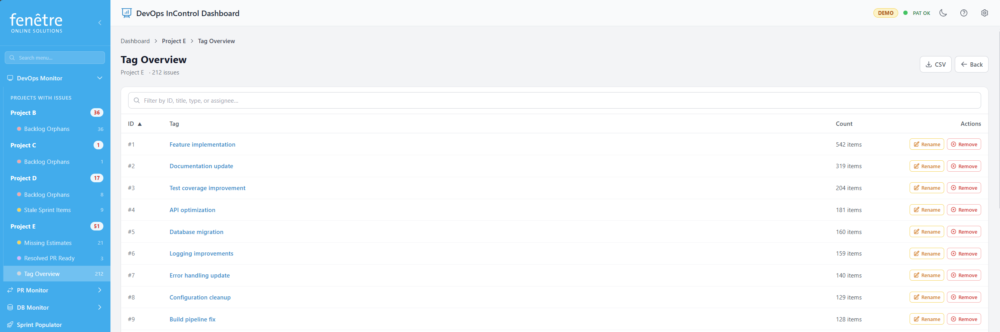

Working with Tags
Tags are labels you can attach to work items in Azure DevOps. DevOps InControl lets you view, add, rename, and remove tags directly from the dashboard without switching to Azure DevOps.

Viewing all items with a specific tag.
How to View Tag Items
- If the Tag Overview check is enabled for a project, the Dashboard shows a list of all tags used in that project.
- Click a tag name to see all work items that carry that tag.
- The tag detail view shows the tag name, item count, and a table of all matching items.
Tag Actions
| Action | What It Does |
|---|---|
| Remove tag | Removes the tag from a specific work item (or from all items in bulk). |
| Rename tag | Changes the tag name across all items that have it. |
Important
Tag changes are saved directly to Azure DevOps. Renaming or removing a tag affects the items in your real project, not just in DevOps InControl.
Tip
Tags that look like version numbers (e.g. "1.2.3") are automatically hidden from the Tag Overview to reduce clutter.